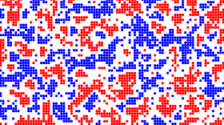
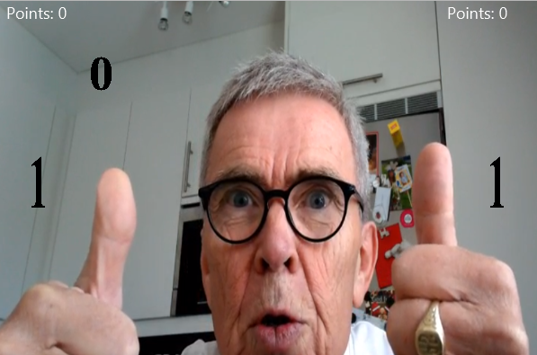

Games and projects
A small collection of games and projects I've developed over the years.
For more see GitHub.
Gravity

A semi accurate simulation of a three-body gravitational system. I made this as my high-school "graduation project", hence the focus on math/physics.
Schiller segregation

A simple simulation of cells following Schiller's ruleset for segregation. Parameters must be edited in code to display different scenarios.
Rolf-pong

A pong game I made in triute to Prof. Rolf at Chalmers.